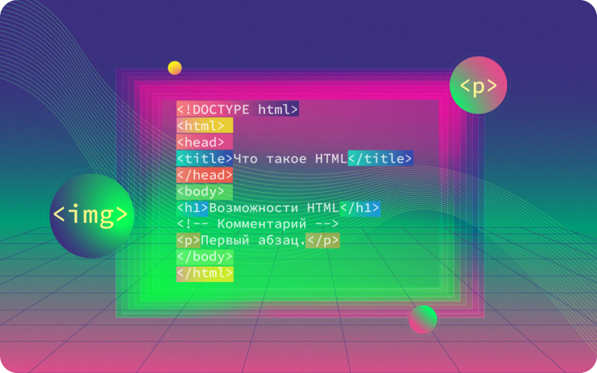

Основы HTML и CSS
-

-
Что нового
А еще не помогали регистрировать ИП, если предприниматель находится за границей или он несовершеннолетний. Теперь сможем бесплатно открывать бизнес в этих ситуациях — через партнера, сервис «Кнопка». Регистрация через Кнопку пока работает в тестовом формате — до 30 июня 2024 года.
Еще я начала фиксировать траты в CoinKeeper. Правда, оказалось, что приложение многое не умеет делать автоматически: например, записывать часть трат или заводить категории расходов — приходилось делать это вручную.
-
Что изменилось,
когда мы познакомились с ВовойКогда мы познакомились, у Вовы были абстрактные цели, например когда‑нибудь купить квартиру. Но он даже не знал, сколько примерно стоит недвижимость, и не вел бюджет. Когда мы стали планировать совместные поездки или досуг на выходные, много ругались из‑за того, что он хотел оплачивать их сам.
Я возмущалась: была убеждена, что раз у меня есть работа, я должна платить за себя сама. А Вова пытался донести, что его доход больше и платить за нас двоих — это справедливо. Мы не могли найти точки соприкосновения.
В марте 2022 года мы съехались. Общих трат стало больше: добавились аренда квартиры, доставка продуктов, развлечения с друзьями. Сначала мы пытались платить по очереди, но когда стали планировать первый совместный отпуск, начались проблемы: Вова не хотел делить траты на поездку поровну, а скидываться пропорционально доходам казалось несправедливым.
Мы поняли, что проблему решит только совместный бюджет, где все деньги и цели, на которые мы их тратим, будут общими. Эту идею предложил Вова, а я долго отказывалась: мне было некомфортно, потому что он зарабатывал в два раза больше, а значит, мой вклад в общий бюджет будет меньше. Со временем стало понятно, что по‑другому проблему не решить, и я согласилась на общий счет.
-
-
Как мы откладываем сразу на шесть целей
На старте мы обсудили, на что хотим копить. Получилось шесть целей — под них мы открыли пять накопительных счетов и вклад.
Ипотека. На год отношений мы купили квартиру в ипотеку. На этот счет откладываем деньги, чтобы гасить кредит досрочно.
Ремонт. Когда наш дом сдадут, в квартире нужно будет сделать ремонт. Такие работы сейчас стоят пару миллионов.
Путешествия. Это счет в долларах. Чтобы его пополнить, мы каждый раз конвертируем рубли в валюту, причем вне зависимости от курса: он часто растет и падает, угадать, когда будет выгодно купить доллары, не получится.
Здоровье. Здесь лежат деньги на походы к врачу, например к стоматологу. Тратим их по необходимости, а если деньги не понадобились в этом месяце, они сохраняются до следующего.
Подарки. Часто нужны деньги на подарки — на свадьбы и дни рождения, друг другу, родителям.
Деньги на черный день. Это пополняемый вклад — неприкасаемый счет, деньги с него мы будем использовать, только если случится что‑то непредвиденное. Например, если кто‑то из нас заболеет, а лечение будет стоить очень дорого, или придется экстренно переезжать.